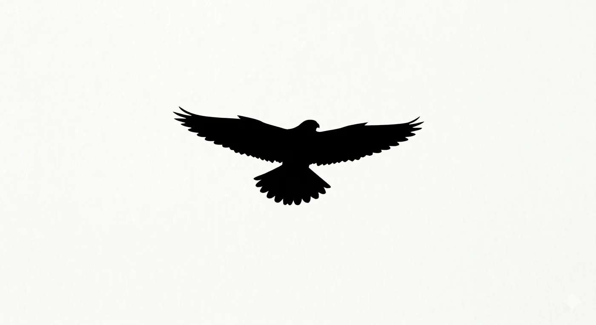
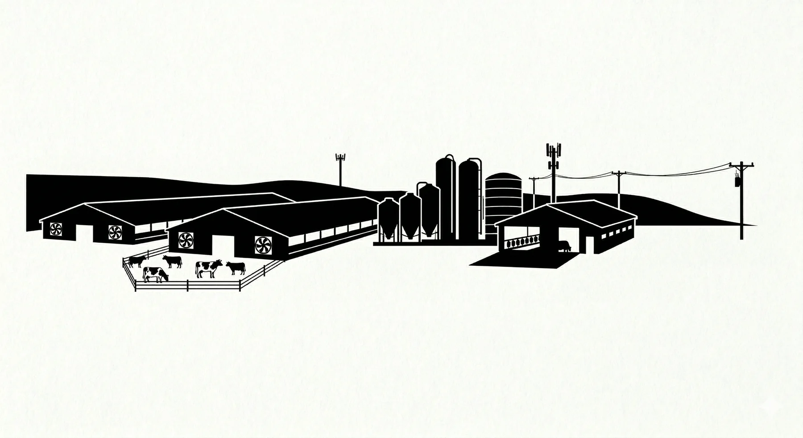
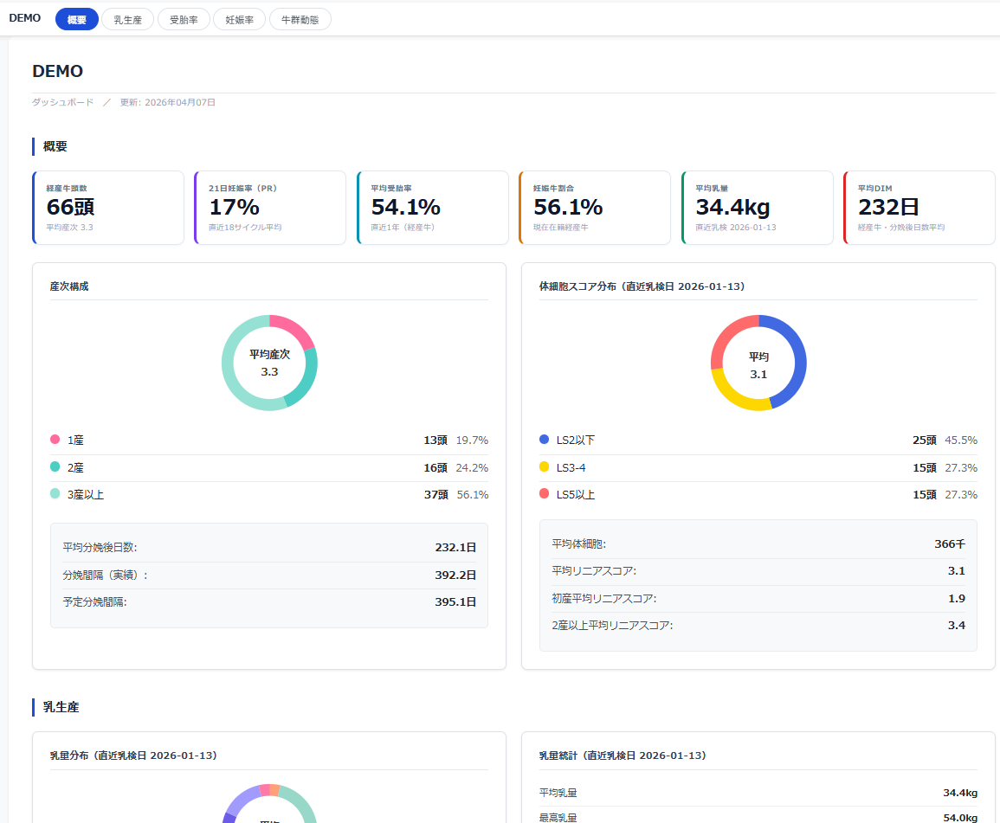
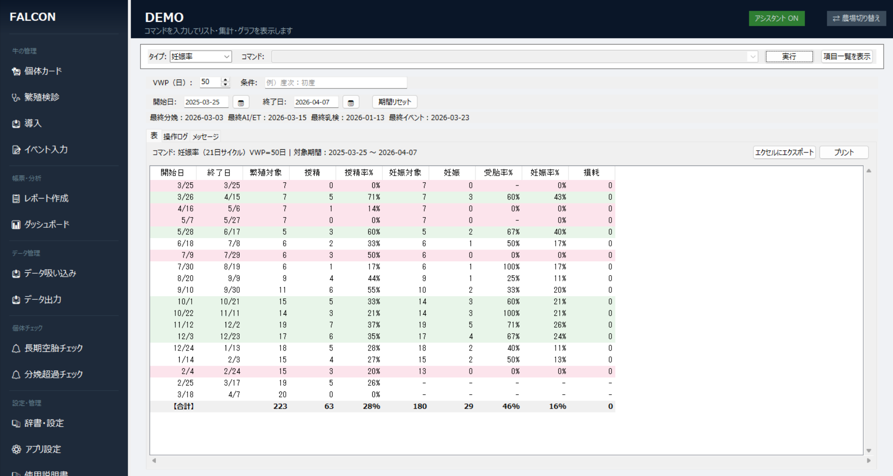
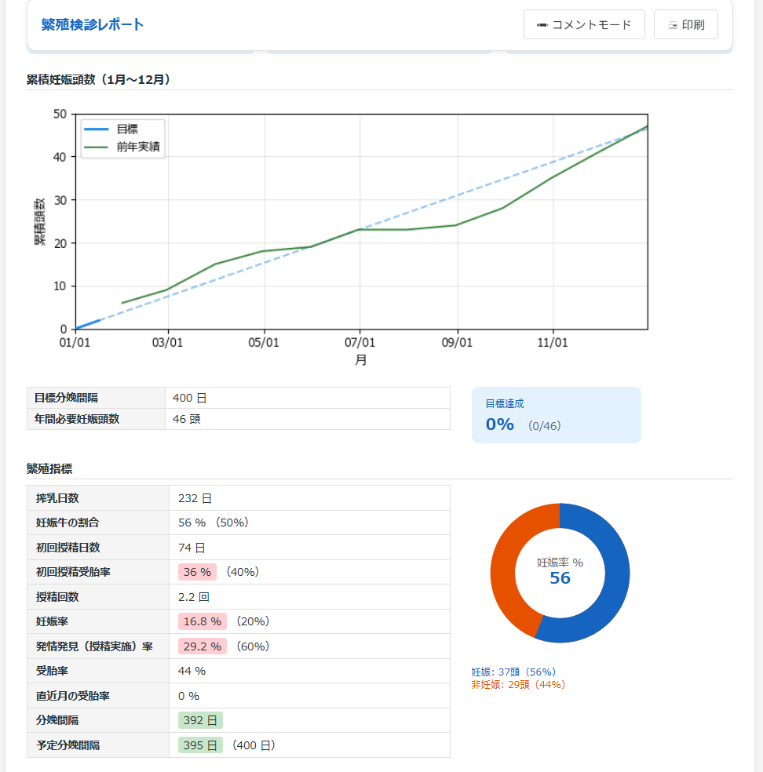

FALCON は、海外牛群管理ソフトに匹敵する分析力を持ちながら、
完全日本語・直感操作で現場の獣医師を強力にサポートします。
Farm Analysis for Lactating Cattle Optimization (Nippon Model)
Problem
海外牛群管理ソフトは分析力に優れていますが、
日本の現場には大きな3つの障壁がありました。
海外製牛群管理ソフトはすべての操作がコマンドライン入力。英語の専門用語を習得しなければ 基本的な集計すらできず、現場の獣医師には敷居が高すぎました。
海外製ソフトは本体費用に加えて保守・サポート費用も高額。 個人で担当農場に導入を勧めるには、費用面での説明が難しい状況でした。
深い分析ができても、結果をわかりやすく農家に伝えるには 別途レポート作成の手間がかかります。多忙な現場では後回しになりがちでした。
Screenshots
百聞は一見に如かず。現場で動いているFALCONの画面です。

経産牛頭数・21日妊娠率・平均受胎率・平均乳量などの主要KPIを自動集計。訪問前に農場状況を一目で把握できます。

世界標準のロジックで18サイクル分の妊娠率・授精率・受胎率を自動集計。問題のあるサイクルを即座に特定できます。

累積妊娠頭数グラフ・繁殖指標一覧・ドーナツチャートを自動生成。農家への説明資料がそのまま出来上がります。
Solution
現場の獣医師が設計したから、現場で本当に使えます。
コマンド不要。すべての操作をマウスで完結できます。 乳検データ・ゲノムレポートの取り込みも数クリック。 初めての獣医師でも、導入当日から使えます。
21日妊娠率（21-day Pregnancy Rate）をはじめ、 海外牛群管理ソフトと同等のロジックで繁殖成績を正確に算出。 世界標準指標で農場をベンチマーク評価できます。
繁殖・分娩・乳量・ゲノムの主要指標をダッシュボードに自動集計。 複雑な分析が得意でない獣医師でも、訪問前に農場の状態を 一目で把握し、一定水準以上の情報を農家に還元できます。
牛群管理から個体診療まで携わる臨床獣医師が、 日々の問題意識と実践経験から「現場に何が必要か・何を還元すべきか」を考え抜いて開発しました。
Features
繁殖から乳質・ゲノムまで、酪農経営に必要な分析を網羅します。
世界標準ロジックで繁殖成績を算出。サイクルごと・DIMごとの推移グラフで問題サイクルを即座に特定。
検診結果の入力・集計から、受胎率・妊娠率・空胎日数の追跡まで一元管理。
1頭ごとの繁殖・分娩・治療・乳量・ゲノム情報を時系列で可視化。過去のイベントも即検索。
300日超空胎牛・分娩予定15日超過牛を自動抽出。見落としをゼロに。
DHI乳検データ・ゲノム評価レポートをワンクリックで取り込み。既存データを無駄にしません。
海外牛群管理ソフト形式のデータをFALCONに取り込み可能。既存ユーザーも乗り換えできます。
訪問前にダッシュボードを確認するだけで、その日の農場状況を把握。農家への説明資料も自動作成。
担当農場を1台のPCで管理。農場間の切り替えも瞬時に。担当が増えても追加費用なし。
農場でのネット環境に依存せず動作。データはローカルに保存されるため、通信のない牛舎でも安心。
Comparison
海外製コマンドライン型牛群管理ソフトと比べた、FALCONの優位点。
| FALCON | 海外製コマンド型ソフト | |
|---|---|---|
| 操作言語 | ✓ 完全日本語 | ✗ 英語のみ |
| 操作方法 | ✓ GUI（マウス操作） | ✗ コマンドライン |
| 21日妊娠率算出 | ✓ 世界標準互換ロジック | ✓ 標準機能 |
| 乳検データ連携 | ✓ 対応 | ✓ 対応 |
| ゲノムデータ連携 | ✓ 対応 | △ 限定的 |
| ダッシュボード自動生成 | ✓ 自動 | ✗ コマンド入力要 |
| 導入コスト | ✓ 国内価格・年額制 | ✗ 高額・外貨建て |
| オフライン動作 | ✓ 完全オフライン | ✓ 可 |
Case Study
データ分析と定期繁殖検診が、農場の繁殖成績・経営成績を大きく改善させた実例です。
CASE REPORT — 北獣会誌 64巻（2020年）
🏆 北海道獣医師会長賞 受賞
オホーツク管内の酪農場（経産牛49頭・つなぎ飼い・夫婦2人経営）。 繁殖成績の低迷により経営上の課題を抱えていたが、 2017年4月より獣医師担当制の定期繁殖検診を開始し、 繁殖管理ソフトによるデータ分析で問題を特定。農場主自身の改善能力を引き出すアプローチで、 繁殖成績だけでなく乳量・乳質まで大幅に改善させた。
▸ データ分析が明らかにした根本原因と打ち手
繁殖管理ソフトで全指標を分析した結果、最大の問題は発情発見率の低さ（34%）と判明。 ホルモン剤による定時授精プログラムへの過度な依存を断ち、自然発情発見の向上と カウコンフォートの改善を重点的に指導。 定期検診ごとに妊娠率・発情発見率・受胎率をフィードバックし続けることで、 農場主が自ら課題を認識し改善するサイクルが生まれた。 大きな施設投資をすることなく、繁殖成績の改善が乳量・乳質の向上へと連鎖した。
大脇茂雄「定期繁殖検診を契機に生産性が向上した酪農場の1例」北獣会誌 64, 241–244（2020）
──このような繁殖成績の可視化・問題特定・継続的フィードバックの仕組みを、
誰でも使えるようにしたものがFALCONです。
FALCONは、牛群管理から個体診療まで携わる臨床獣医師・大脇茂雄が、 20年以上の酪農臨床経験を通じて開発した牛群管理ソフトです。
個体診療の症例報告から繁殖管理・周産期管理の分析研究、蹄病や乳質の改善研究まで、多分野にわたる研究実績を持ち、 2010年には牛出血性腸症候群の病理学的研究で 日本獣医師会獣医学術賞（産業動物部門・全国大会）を受賞。 同研究は2015年に英文論文として Journal of Veterinary Medical Science（77巻7号）にも掲載されています。 農林水産省経営局長賞（2008年）を獲得し、 北海道獣医師会誌 優秀論文賞（2015年）、 産業動物獣医学会北海道地区学会長賞（2023年）と 地域から全国まで一貫して評価されてきた実績を持ちます。 2023年には海外牛群管理ソフトの解説論文を 家畜診療誌に発表するなど、 日本の酪農現場への知識普及にも積極的に取り組んでいます。
「世界水準の牛群分析を、日本の現場で働くすべての獣医師が 使えるようにしたい」──その思いがFALCON開発の出発点です。
Pricing
1台のPCで担当農場を何件でも管理できます。農場が増えても追加費用はかかりません。
所属先・関連機関の方は
お気軽にご相談ください
担当農場数・利用状況に応じて
最適な条件をご提案します
複数端末での導入も
対応いたします
まずは 30日間の無料トライアル をお試しください。
クレジットカード不要・インストールするだけで即日利用開始できます。
30日間の無料トライアルで、FALCONが現場にフィットするかを
実際の担当農場データで確かめていただけます。